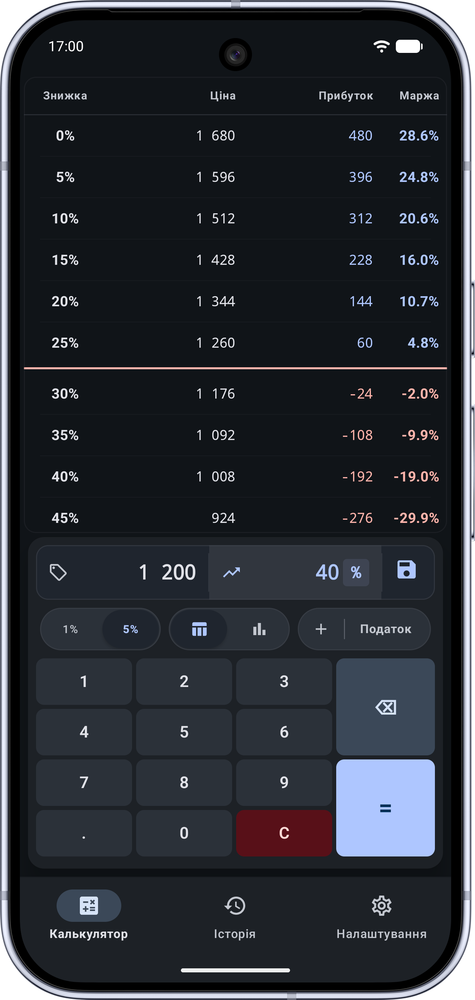
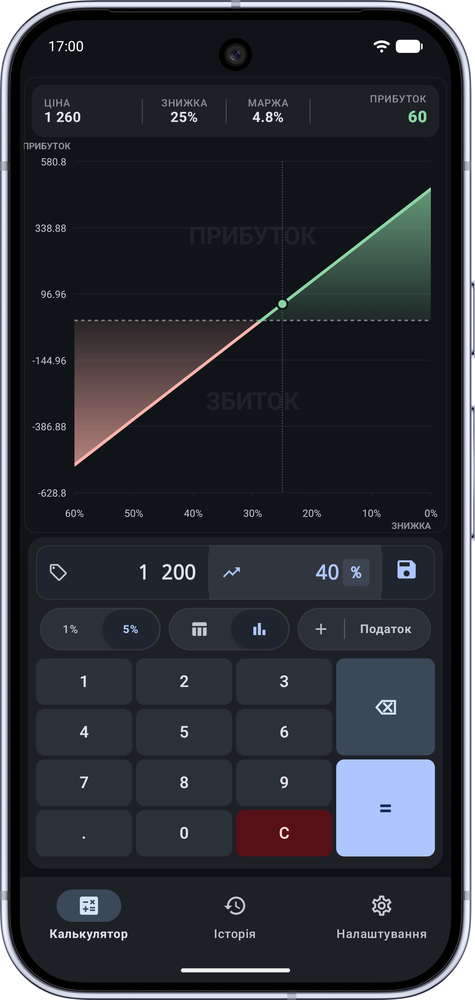
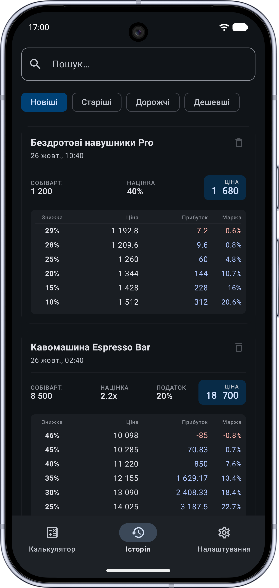

Не плутайте маржу з націнкою.
Бачте межу свого прибутку.
Зробили знижку 20% і спрацювали в мінус? Введіть собівартість та націнку — Margin Pro розрахує покрокову сітку знижок, покаже графік точки беззбитковості та точний чистий дохід з урахуванням податків.

Очікується скріншот:assets/margin-pro/screen-main-uk.png
Головна пастка торгової математики
Націнка 50% не означає, що ви заробляєте половину вартості товару. Маржа в такому випадку становить лише 33.3%.
- • Збитковий розпродаж: поставили націнку 25%, дали клієнту знижку 20% — і пішли в чистий мінус через податки.
- • Ілюзія відсотків: знижка рахується від кінцевої ціни, а націнка — від собівартості. Вони не рівнозначні.
- • Рахунки «на коліні»: рахувати в умі або шукати формули в Excel під час переговорів з клієнтом занадто довго.
- • Повна таблиця знижок: розкладка цін, доходів та маржі з кроком 1% або 5% від базової ціни до зони збитку.
- • Графік точки беззбитковості: наочна межа (0%), яка чітко показує граничний розмір безпечної знижки.
- • Розумний податок: точний розрахунок із врахуванням податку/ПДВ (0%, 5%, 7%, 20% або власна ставка).
Точний аналіз прибутковості кожної угоди
Маржа % або Коефіцієнт (x)
Вводьте торгову надбавку так, як вам звично: у відсотках маржинальності (%) або як множник собівартості (наприклад, 1.5x або 2x).
Інтерактивний графік Break-Even
Візуальна крива прибутковості: зелена зона прибутку, червона зона збитку та виділена нульова точка, нижче якої ціну опускати не можна.
Покрокова таблиця акцій
Детальна сітка зі знижками від 0% до глибокого дисконту з кроком 1% або 5%. Автоматичний скрол до критичної межі окупності.
Історія угод та пошук
Зберігайте розрахунки у базі даних, шукайте потрібні позиції та відновлюйте їх у калькуляторі в один клік.
Вбудована ергономічна клавіатура
Спеціальна цифрова клавіатура розроблена для швидкої роботи однією рукою: великі клавіші, швидке очищення та миттєвий підрахунок.
Повна автономність та JSON-бекап
100% роботи офлайн без інтернету та реєстрацій. Експорт та імпорт збережених угод у відкритому форматі JSON через системне сховище.
Зрозумілий інтерфейс для швидких рішень
Перемикання між детальною таблицею розрахунків та наочним графіком рентабельності.
Таблиця розрахунку знижок
Таблиця цін, доходу та маржі

screen-chart-uk.pngГрафік беззбитковості
Графік точки беззбитковості

screen-history-uk.pngІсторія розрахунків
Історія угод та бекап
Часті запитання
У чому принципова різниця між маржею та націнкою?
Націнка (Markup) показує відсоток доданої вартості до собівартості: (Прибуток / Собівартість) × 100%. Вона може бути 100%, 300% і більше.
Маржа (Margin) — це частка чистого прибутку у кінцевій виручці: (Прибуток / Роздрібна ціна) × 100%. Маржа ніколи не перевищує 100%. Плутанина між ними призводить до встановлення збиткових знижок.
Як калькулятор визначає точку беззбитковості?
На основі введеної собівартості, націнки та ставки податку алгоритм вираховує мінімальну ціну з урахуванням податкового навантаження. На графіку та в таблиці автоматично виділяється максимальний відсоток безпечної знижки, за якою прибуток дорівнює нулю.
Чи потрібен інтернет для роботи калькулятора?
Ні. Додаток не використовує серверів, функціонує на 100% локально і зберігає всі розрахунки лише у базі даних на вашому смартфоні.
Тримайте маржинальність під контролем
Встановіть Margin Pro та захистіть свій бізнес від прихованих збитків і нерозрахованих знижок.